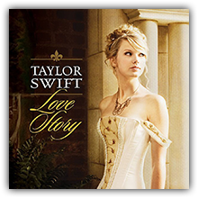
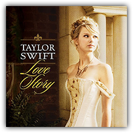
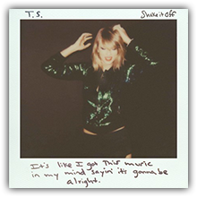
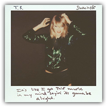
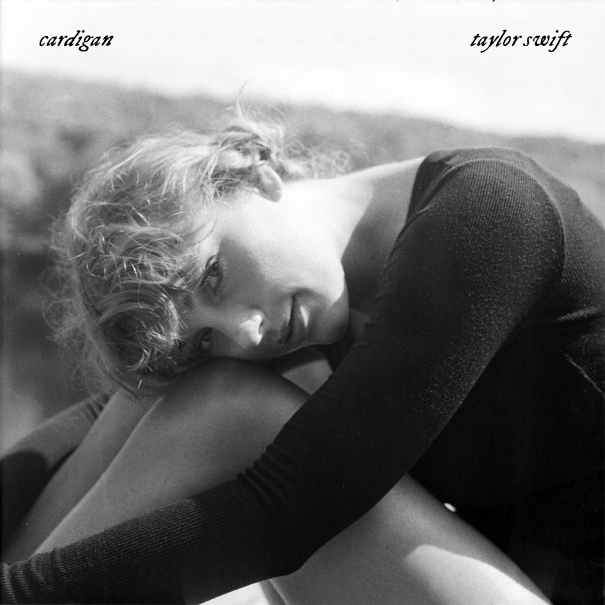
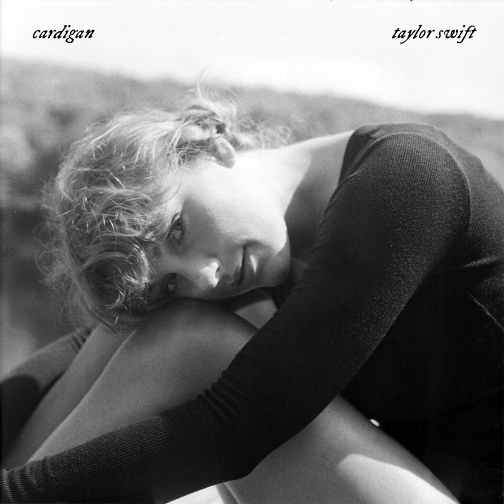
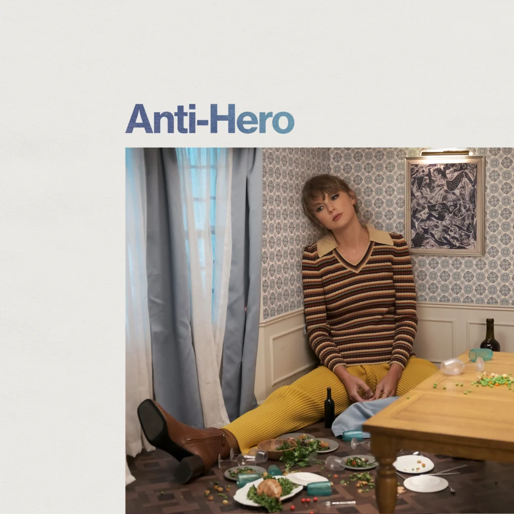
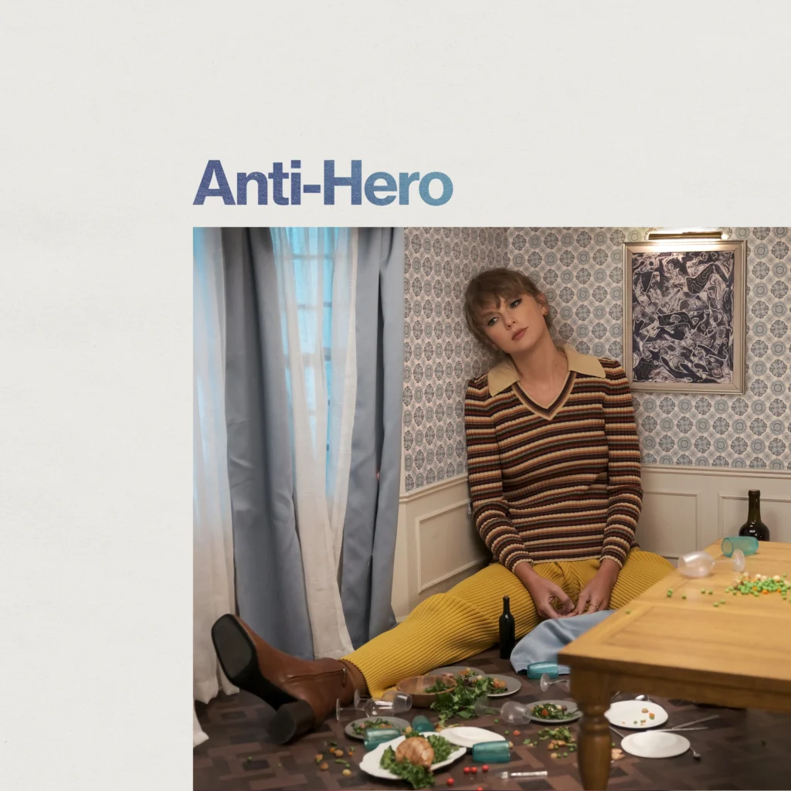

ALBUNS OF THE YEAR - TAYLOR SWIFT
FEARLESS - 2008 -
O disco incorpora elementos da música country que também estiveram presentes em seu antecessor
.png)  1 SINGLE - Love Story
 1 SINGLE - Love Story
1989 - 2014 -
Inicialmente, o álbum foi comercializado somente nos formatos físico e digital, não sendo disponibilizado em serviços de streaming, uma decisão vinda da própria artista. O disco foi desenvolvido e gravado entre 2013 e 2014 durante a turnê The Red Tour
  1 SINGLE - Shake It Off
 1 SINGLE - Shake It Off
FOLKLORE - 2020 -
A concepção de Folklore se deu no contexto da pandemia de COVID-19, quando Swift foi obrigada a entrar em quarentena, findando por abortar os planos de embarcar em uma turnê mundial para promover seu disco anterior, Lover (2019), bem recebido comercial e criticamente.
 
1 SINGLE - Cardigan

1 SINGLE - Cardigan
MIDNIGHTS - 2022 -
Swift o concebeu como um álbum conceitual, que explora reflexões noturnas inspirada pelas "noites de insônia" de Swift e aborda temas como ansiedade, insegurança, autocrítica, autoconsciência, insônia e autoconfiança, utilizando letras confessionais e ao mesmo tempo enigmáticas.
 
1 SINGLE - Anti Hero

1 SINGLE - Anti Hero